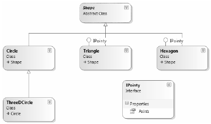

When a class (or structure) chooses to extend its functionality by supporting interfaces, it does so using a comma-delimited list in the type definition. Be aware that the direct base class must be the first item listed after the colon operator. When your class type derives directly from System.Object, you are free to simply list the interface(s) supported by the class, as the C# compiler will extend your types from System.Object if you do not say otherwise. On a related note, given that structures always derive from System.ValueType (see Chapter 4 for full details), simply list each interface directly after the structure definition. Ponder the following examples:
// This class derives from System.Object and // implements a single interface. public class Pencil : IPointy {...} // This class also derives from System.Object // and implements a single interface. public class SwitchBlade : object, IPointy {...} // This class derives from a custom base class // and implements a single interface. public class Fork : Utensil, IPointy {...} // This struct implicitly derives from System.ValueType and // implements two interfaces. public struct Arrow : ICloneable, IPointy {...}
Understand that implementing an interface is an all-or-nothing proposition. The supporting type is not able to selectively choose which members it will implement. Given that the IPointy interface defines a single read-only property, this is not too much of a burden. However, if you are implementing an interface that defines ten members (such as the IDbConnection interface shown earlier), the type is now responsible for fleshing out the details of all ten abstract entities.
For this example, insert a new class type named Triangle that is-a Shape and supports IPointy. Note that the implementation of the read-only Points property simply returns the correct number of points (3).
// New Shape derived class named Triangle. class Triangle : Shape, IPointy { public Triangle() { } public Triangle(string name) : base(name) { } public override void Draw() { Console.WriteLine("Drawing {0} the Triangle", PetName); } // IPointy Implementation. public byte Points { get { return 3; } } } // This struct implicitly derives from System.ValueType and // implements two interfaces. public struct Arrow : ICloneable, IPointy {...}
Now, update your existing Hexagon type to also support the IPointy interface type:
// Hexagon now implements IPointy. class Hexagon : Shape, IPointy { public Hexagon(){ } public Hexagon(string name) : base(name){ } public override void Draw() { Console.WriteLine("Drawing {0} the Hexagon", PetName); } // IPointy Implementation. public byte Points { get { return 6; } } }
To sum up the story so far, the Visual Studio 2010 class diagram shown in Figure 9-2 illustrates IPointy-compatible classes using the popular "lollipop" notation. Notice again that Circle and ThreeDCircle do not implement IPointy, as this behavior makes no sense for these particular classes.
Figure 9-2. The shapes hierarchy, now with interfaces
Note To display or hide interface names on the class designer, right-click on the interface icon and select the Collapse or Expand option.